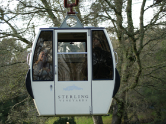
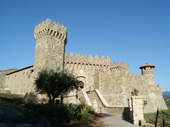

Customer Testimonials

"I just wanted to write and say how wonderful our driver, Rich Martin was when we visited Napa Valley about three weeks ago. We had a list of wineries we wanted to go to and he took us to some absolutely fabulous places we would not have known about otherwise. For instance, Rich took us to a fabulous little family winery called Larson Family. He was kind enough to call ahead and they opened the place just for my boyfriend and I to taste wine at 9:30 a.m.! It was great. He also had a cute little picnic set up for us outside at the V. Sattui winery so we could enjoy our lunches in the sun. Rich's personality was just perfect-he was charming and sweet and treated us wonderfully. We couldn't have had a better time with him."
- Jaime L. Hochhausen, Attorney at Law, Quarles & Brady LLP
"I highly recommend John Kopilow in Napa/Sonoma. He was fantastic. Drove well, was very responsible, went above and beyond. He loaned us his cooler for lunch, and he even volunteered to pickup food for us while we were tasting at the winery! Even if you don't plan on getting drunk, he makes it more relaxing driving on unfamiliar roads. It is really a small price to pay to make your vacation more memorable. He also knows a lot about which places are good to go to, so he can enhance your experience. I wouldn't think of using anyone else. (I know it may sound like he's family, or I get a kickback, but neither is true)
-Bob Titelman Atlanta, GA